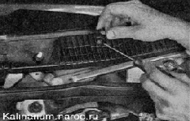
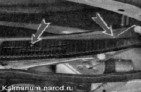
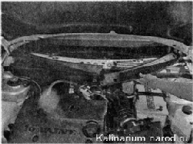

Решетка воздухопритока снятие и установкаСнятие 1. Снимаем рычаги очистителя ветрового стекла (см. «Очиститель ветрового стекла — снятие и установка»). 2. Поддевая шлицевой отверткой, извлекаем из решетки три декоративные заглушки. 
3. Ключом TORX Т20 отворачиваем семь саморезов крепления решетки воздухопритока.  4. Снимаем правую и левую части решетки воздухопритока. Установка Устанавливаем решетку в обратной последовательности. |